In this post, RStudio is pleased to once again feature Arthur Steinmetz, former Chairman, CEO, and President of OppenheimerFunds. Art is an avid amateur data scientist and is active in the R statistical programming language community.
We’ve reformatted and lightly edited Art’s post for clarity here. You can read Art’s original post and other articles he’s written at Outsider Data Science. Art has also published his code and data on his Covid Cases Versus Deaths GitHub repository.
I have a macabre fascination with tracking the course of the COVID-19 pandemic. I suspect there are two reasons for this. One, by delving into the numbers I imagine I have some control over this thing. Second, it feels like lighting a candle to show that science can reveal truth at a time when the darkness of anti-science is creeping across the land.
The purpose of this project is, as usual, twofold. First, to explore an interesting data science question and, second, to explore some techniques and packages in the R universe. We will be looking at the relationship of COVID-19 cases to mortality. What is the lag between a positive case and a death? How does that vary among states? How has it varied as the pandemic has progressed? This is an interesting project because is combines elements of time series forecasting and dependent variable prediction.
I have been thinking about how to measure mortality lags for a while now. What prompted to do a write-up was discovering a new function in Matt Dancho’s timetk package, tk_augment_lags, which makes short work of building multiple lags. Not too long ago, managing models for multiple lags and multiple states would have been a bit messy. The emerging tidymodels framework from RStudio using list columns is immensely powerful for this sort of thing. It’s great to reduce so much analysis into so few lines of code.
This was an exciting project because I got some validation of my approach. I am NOT an epidemiologist or a professional data scientist. None of the results I show here should be considered authoritative. Still, while I was working on this project I saw this article in the Wall Street Journal which referenced the work by Dr. Trevor Bedford, an epidemiologist at the University of Washington. He took the same approach I did and got about the same result.
I’ve broken down this analysis into three major parts:
There is no shortage of data to work with. Here we will use the NY Times COVID tracking data set which is updated daily. The package covid19nytimes lets us refresh the data on demand.
knitr::opts_chunk$set(echo = TRUE, eval = TRUE)
# correlate deaths and cases by state
library(tidyverse)
library(covid19nytimes)
library(timetk)
library(lubridate)
library(broom)
library(knitr)
library(gt)
table_style <- list(cell_text(font = "Arial", size = "small"))
# source https://github.com/nytimes/covid-19-data.git
us_states_long <- covid19nytimes::refresh_covid19nytimes_states()
# The following filter is to restrict the data to that originally posted at
# https://outsiderdata.netlify.app/post/covid-cases-vs-deaths/
# Should you wish to update the models with the latest data, remove the
# following statement.
us_states_long <- us_states_long %>% filter(date < ymd("2020-12-06"))
# if link is broken
# load("../data/us_states_long.rdata")
# use data from November 15 to stay consistent with text narrative
cutoff_start <- as.Date("2020-03-15") # not widespread enough until then
cutoff_end <- max(us_states_long$date) - 7 # discard last week since there are reporting lags
us_states_long <- us_states_long %>% filter(date >= cutoff_start)
us_states_long <- us_states_long %>% filter(date <= cutoff_end)
# Remove tiny territories
territories <- c("Guam", "Northern Mariana Islands")
us_states_long <- us_states_long %>% filter(!(location %in% territories))
save(us_states_long, file = "us_states_long.rdata")
us_states_long %>%
head() %>%
gt() %>%
tab_options(table.width = "100%") %>%
tab_style(style = table_style,
locations = cells_body()) %>%
opt_all_caps()| date | location | location_type | location_code | location_code_type | data_type | value |
|---|---|---|---|---|---|---|
| 2020-11-28 | Alabama | state | 01 | fips_code | cases_total | 244993 |
| 2020-11-28 | Alabama | state | 01 | fips_code | deaths_total | 3572 |
| 2020-11-28 | Alaska | state | 02 | fips_code | cases_total | 31279 |
| 2020-11-28 | Alaska | state | 02 | fips_code | deaths_total | 115 |
| 2020-11-28 | Arizona | state | 04 | fips_code | cases_total | 322774 |
| 2020-11-28 | Arizona | state | 04 | fips_code | deaths_total | 6624 |
The NY Times data is presented in a “long” format. When we start modeling, long will suit us well but first we have to add features to help us and that will require pivoting to wide, adding features and then back to long. The daily data is so irregular the first features we will add are 7-day moving averages to smooth the series. We’ll also do a nation-level analysis first so we aggregate the state data as well.
# Create rolling average changes
# pivot wider
# this will also be needed when we create lags
us_states <- us_states_long %>%
# discard dates before cases were tracked.
filter(date > as.Date("2020-03-01")) %>%
pivot_wider(names_from = "data_type", values_from = "value") %>%
rename(state = location) %>%
select(date, state, cases_total, deaths_total) %>%
mutate(state = as_factor(state)) %>%
arrange(state, date) %>%
group_by(state) %>%
# smooth the data with 7 day moving average
mutate(cases_7day = (cases_total - lag(cases_total, 7)) / 7) %>%
mutate(deaths_7day = (deaths_total - lag(deaths_total, 7)) / 7)
# national analysis
# ----------------------------------------------
# aggregate state to national
us <- us_states %>%
group_by(date) %>%
summarize(across(
.cols = where(is.double),
.fns = function(x) sum(x, na.rm = T),
.names = "{col}"
))
us[10:20, ] %>%
gt() %>%
tab_options(table.width = "80%") %>%
tab_style(style = table_style,
locations = cells_body()) %>%
opt_all_caps()| date | cases_total | deaths_total | cases_7day | deaths_7day |
|---|---|---|---|---|
| 2020-03-24 | 53906 | 784 | 6858 | 95.29 |
| 2020-03-25 | 68540 | 1053 | 8600 | 127.29 |
| 2020-03-26 | 85521 | 1352 | 10449 | 162.86 |
| 2020-03-27 | 102847 | 1769 | 12121 | 213.14 |
| 2020-03-28 | 123907 | 2299 | 14199 | 277.00 |
| 2020-03-29 | 142426 | 2717 | 15626 | 322.86 |
| 2020-03-30 | 163893 | 3367 | 17202 | 398.43 |
| 2020-03-31 | 188320 | 4302 | 19202 | 502.57 |
| 2020-04-01 | 215238 | 5321 | 20957 | 609.71 |
| 2020-04-02 | 244948 | 6537 | 22775 | 740.71 |
| 2020-04-03 | 277264 | 7927 | 24917 | 879.71 |
We might be tempted to simply plot deaths vs. cases but a scatter plot shows us that would not be satisfactory. As it turns out, the relationship of cases and deaths is strongly conditioned on date. This reflects the declining mortality rate as we have come to better understand the disease.
# does a simple scatterplot tell us anything
# about the relationship of deaths to cases? No.
g <- us %>%
ggplot(aes(deaths_7day, cases_7day)) +
geom_point() +
labs(
title = "Not Useful: Simple Scatterplot of U.S. Cases vs. Deaths",
caption = "Source: NY Times, Arthur Steinmetz"
)
show(g)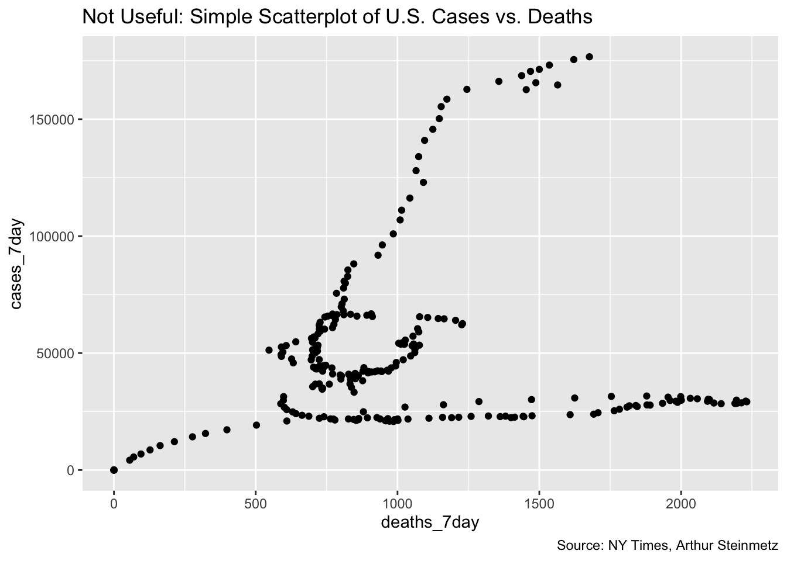
We can get much more insight plotting smoothed deaths and cases over time. It is generally bad form to use two different y axes on a single plot but but this example adds insight.
A couple of observations are obvious. First when cases start to rise, deaths follow with a lag. Second, we have had three spikes in cases so far and in each successive instance the mortality has risen by a smaller amount. This suggests that, thankfully, we are getting better at treating this disease. It is NOT a function of increased testing because positivity rates have not been falling.
# visualize the relationship between rolling average of weekly cases and deaths
coeff <- 30
g <- us %>%
ggplot(aes(date, cases_7day)) +
geom_line(color = "orange") +
theme(legend.position = "none") +
geom_line(aes(x = date, y = deaths_7day * coeff), color = "red") +
scale_y_continuous(
labels = scales::comma,
name = "Cases",
sec.axis = sec_axis(deaths_7day ~ . / coeff,
name = "Deaths",
labels = scales::comma
)
) +
theme(
axis.title.y = element_text(color = "orange", size = 13),
axis.title.y.right = element_text(color = "red", size = 13)
) +
labs(
title = "U.S. Cases vs. Deaths",
subtitle = "7-Day Average",
caption = "Source: NY Times, Arthur Steinmetz",
x = "Date"
)
show(g)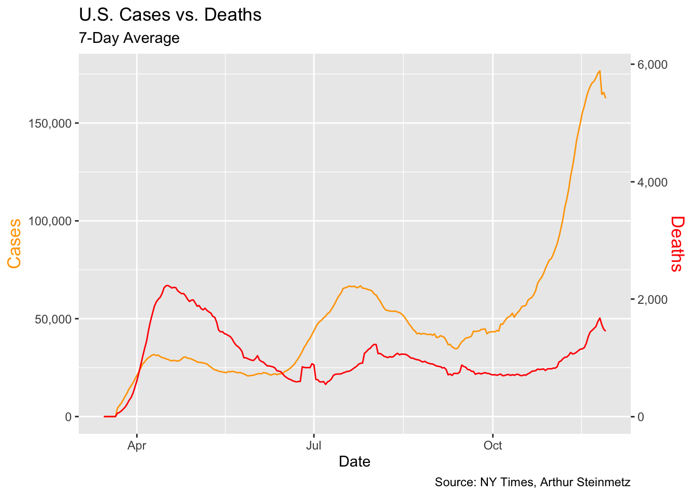
This illustrates a problem for any modeling we might do. It looks like the more cases surge, the less the impact on deaths. This is NOT a valid conclusion. A simple regression of deaths vs. cases and time shows the passage of time has more explanatory power than cases in predicting deaths so we have to take that into account.
# passage of time affects deaths more than cases
lm(deaths_7day ~ cases_7day + date, data = us) %>%
tidy() %>%
gt() %>%
tab_options(table.width = "60%") %>%
tab_style(style = table_style,
locations = cells_body()) %>%
opt_all_caps()| term | estimate | std.error | statistic | p.value |
|---|---|---|---|---|
| (Intercept) | 7.654e+04 | 1.005e+04 | 7.613 | 5.153e-13 |
| cases_7day | 8.279e-03 | 1.118e-03 | 7.408 | 1.859e-12 |
| date | -4.113e+00 | 5.467e-01 | -7.523 | 9.109e-13 |
We’ll approach this by running regression models of deaths and varying lags (actually leads) of cases. We chose to lead deaths as opposed to lagging cases because it will allow us to make predictions about the future of deaths given cases today. We include the date as a variable as well. Once we’ve run regressions against each lead period, we’ll chose the lead period that has the best fit (R-Squared) to the data.
The requires a lot of leads and a lot of models. Fortunately, R provides the tools to make this work very simple and well organized. First we add new columns for each lead period using timetk::tk_augment_lags. This one function call does all the work but it only does lags so we have to futz with it a bit to get leads.
I chose to add forty days of leads. I don’t really think that long a lead is realistic and, given the pandemic has been around only nine months, there aren’t as many data points forty days ahead. Still, I want to see the behavior of the models. Once we have created the leads we remove any dates for which we don’t have led deaths.
Here are the first 10 leads:
# create columns for deaths led 0 to 40 days ahead
max_lead <- 40
us_lags <- us %>%
# create lags by day
tk_augment_lags(deaths_7day, .lags = 0:-max_lead, .names = "auto")
# fix names to remove minus sign
names(us_lags) <- names(us_lags) %>% str_replace_all("lag-|lag", "lead")
# use only case dates where we have complete future knowledge of deaths for all lead times.
us_lags <- us_lags %>% filter(date < cutoff_end - max_lead)
us_lags[1:10, 1:7] %>%
gt() %>%
tab_options(table.width = "100%") %>%
tab_style(style = table_style,
locations = cells_body()) %>%
opt_all_caps()| date | cases_total | deaths_total | cases_7day | deaths_7day | deaths_7day_lead0 | deaths_7day_lead1 |
|---|---|---|---|---|---|---|
| 2020-03-15 | 3597 | 68 | 0 | 0.00 | 0.00 | 0.00 |
| 2020-03-16 | 4504 | 91 | 0 | 0.00 | 0.00 | 0.00 |
| 2020-03-17 | 5903 | 117 | 0 | 0.00 | 0.00 | 0.00 |
| 2020-03-18 | 8342 | 162 | 0 | 0.00 | 0.00 | 0.00 |
| 2020-03-19 | 12381 | 212 | 0 | 0.00 | 0.00 | 0.00 |
| 2020-03-20 | 17998 | 277 | 0 | 0.00 | 0.00 | 0.00 |
| 2020-03-21 | 24513 | 360 | 0 | 0.00 | 0.00 | 55.57 |
| 2020-03-22 | 33046 | 457 | 4205 | 55.57 | 55.57 | 69.57 |
| 2020-03-23 | 43476 | 578 | 5565 | 69.57 | 69.57 | 95.29 |
| 2020-03-24 | 53906 | 784 | 6858 | 95.29 | 95.29 | 127.29 |
Now we start the job of actually building the linear models and seeing the real power of the tidymodels framework. Since we have our lead days in columns we revert back to long-form data. For each date we have a case count and 40 lead days with the corresponding death count. As will be seen below, the decline in the fatality rate has been non-linear, so we use a second-order polynomial to regress the date variable.
Our workflow looks like this:
tk_augment_lag (above).pivot to long form.nest the data by lead day and state.map the data set for each lead day to a regression model.glance for each model to determine the best fit lead time.The result is a data frame with our lead times, the nested raw data, model and R-squared for each lead time.
# make long form to nest
# initialize models data frame
models <- us_lags %>%
ungroup() %>%
pivot_longer(
cols = contains("lead"),
names_to = "lead",
values_to = "led_deaths"
) %>%
select(date, cases_7day, lead, led_deaths) %>%
mutate(lead = as.numeric(str_remove(lead, "deaths_7day_lead"))) %>%
nest(data = c(date, cases_7day, led_deaths)) %>%
# Run a regression on lagged cases and date vs deaths
mutate(model = map(
data,
function(df) {
lm(led_deaths ~ cases_7day + poly(date, 2), data = df)
}
))
# Add regression coefficient
# get adjusted r squared
models <- models %>%
mutate(adj_r = map(model, function(x) {
glance(x) %>%
pull(adj.r.squared)
})
%>% unlist())
print(models)## # A tibble: 41 x 4
## lead data model adj_r
## <dbl> <list> <list> <dbl>
## 1 0 <tibble [218 × 3]> <lm> 0.164
## 2 1 <tibble [218 × 3]> <lm> 0.187
## 3 2 <tibble [218 × 3]> <lm> 0.212
## 4 3 <tibble [218 × 3]> <lm> 0.241
## 5 4 <tibble [218 × 3]> <lm> 0.272
## 6 5 <tibble [218 × 3]> <lm> 0.307
## 7 6 <tibble [218 × 3]> <lm> 0.343
## 8 7 <tibble [218 × 3]> <lm> 0.383
## 9 8 <tibble [218 × 3]> <lm> 0.424
## 10 9 <tibble [218 × 3]> <lm> 0.467
## # … with 31 more rowsTo decide the best-fit lead time we choose the model with the highest R-squared.
# Show model fit by lead time
# make predictions using best model
best_fit <- models %>%
summarize(adj_r = max(adj_r)) %>%
left_join(models, by = "adj_r")
g <- models %>%
ggplot(aes(lead, adj_r)) +
geom_line() +
labs(
subtitle = paste("Best fit lead =", best_fit$lead, "days"),
title = "Model Fit By Lag Days",
x = "Lead Time in Days for Deaths",
caption = "Source: NY Times, Arthur Steinmetz",
y = "Adjusted R-squared"
)
show(g)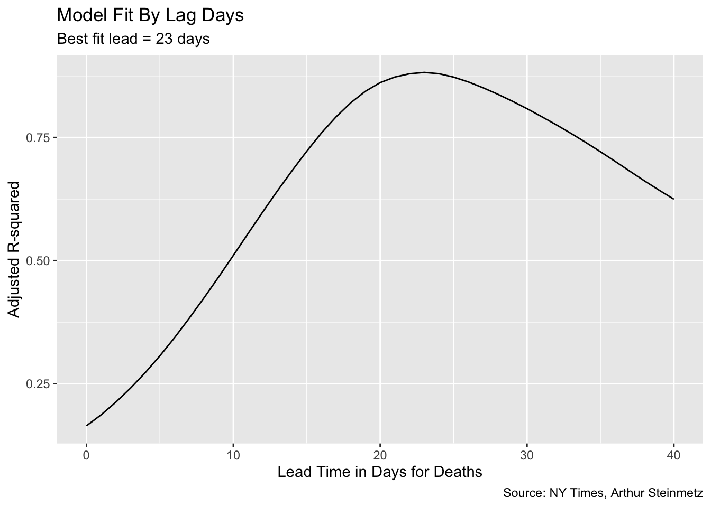
We can have some confidence that we are not overfitting the date variable because the significance of the case count remains. With a high enough degree polynomial on the date variable, cases would vanish in importance.
best_fit$model[[1]] %>%
tidy() %>%
gt() %>%
tab_options(table.width = "80%") %>%
tab_style(style = table_style,
locations = cells_body()) %>%
opt_all_caps()| term | estimate | std.error | statistic | p.value |
|---|---|---|---|---|
| (Intercept) | 4.363e+02 | 3.799e+01 | 11.49 | 4.207e-24 |
| cases_7day | 1.669e-02 | 9.925e-04 | 16.81 | 5.448e-41 |
| poly(date, 2)1 | -7.306e+03 | 2.270e+02 | -32.18 | 5.869e-84 |
| poly(date, 2)2 | 4.511e+03 | 1.674e+02 | 26.95 | 1.016e-70 |
The best-fit lead time is 23 days but let’s use predict to see how well our model fits to the actual deaths.
# ------------------------------------------
# see how well our model predicts
# Function to create prediction plot
show_predictions <- function(single_model, n.ahead) {
predicted_deaths <- predict(single_model$model[[1]], newdata = us)
date <- seq.Date(from = min(us$date) + n.ahead, to = max(us$date) + n.ahead, by = 1)
display <- full_join(us, tibble(date, predicted_deaths))
gg <- display %>%
pivot_longer(cols = where(is.numeric)) %>%
filter(name %in% c("deaths_7day", "predicted_deaths")) %>%
ggplot(aes(date, value, color = name)) +
geom_line() +
labs(
title = "Actual vs. Predicted Deaths",
x = "Date",
y = "Count",
caption = "Source: NY Times, Arthur Steinmetz"
)
gg
}
show_predictions(best_fit, best_fit$lead)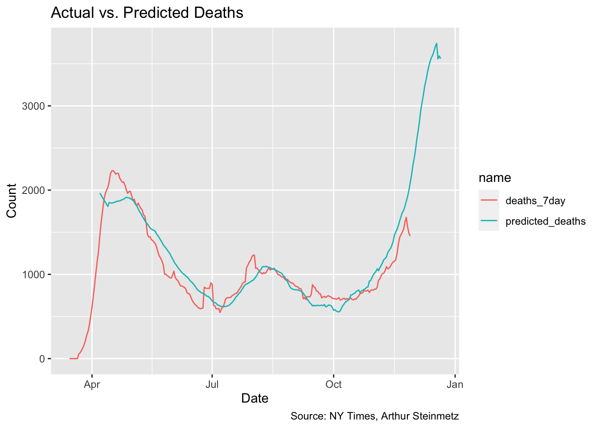
This is a satisfying result, but sadly shows deaths about to spike. This is despite accounting for the improvements in treatment outcomes we’ve accomplished over the past several months. The 23-day lead time model shows a 1.7% mortality rate over the whole length of observations but conditioned on deaths falling steadily over time.
Once we’ve settled on the appropriate lag time, we can look at the fatality rate per identified case. This is but one possible measure of fatality rate, certainly not THE fatality rate. Testing rate, positivity rate and others variables will affect this measure. We also assume our best-fit lag is stable over time so take the result with a grain of salt. The takeaway should be how it is declining, not exactly what it is.
Early on, only people who were very sick or met strict criteria were tested so, of course, fatality rates (on this metric) were much, much higher. To minimize this we start our measure at the middle of April.
Sadly, we see that fatality rates are creeping up again.
fatality <- best_fit$data[[1]] %>%
filter(cases_7day > 0) %>%
filter(date > as.Date("2020-04-15")) %>%
mutate(rate = led_deaths / cases_7day)
g <- fatality %>% ggplot(aes(date, rate)) +
geom_line() +
geom_smooth() +
labs(
x = "Date", y = "Fatality Rate",
title = "Fatality Rates are Creeping Up",
subtitle = "Fatality Rate as a Percentage of Lagged Cases",
caption = "Source: NY Times, Arthur Steinmetz"
) +
scale_y_continuous(labels = scales::percent)
show(g)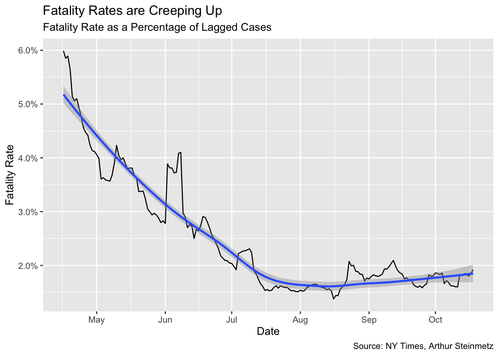
One problem with the national model is each state saw the arrival of the virus at different times, which suggests there might also be different relationships between cases and deaths. Looking at a few selected states illustrates this.
# ------------------------------------------
# state by state analysis
state_subset <- c("New York", "Texas", "California", "Ohio")
# illustrate selected states
g <- us_states %>%
filter(state %in% state_subset) %>%
ggplot(aes(date, cases_7day)) +
geom_line(color = "orange") +
facet_wrap(~state, scales = "free") +
theme(legend.position = "none") +
geom_line(aes(y = deaths_7day * coeff), color = "red") +
scale_y_continuous(
labels = scales::comma,
name = "Cases",
sec.axis = sec_axis(deaths_7day ~ . / coeff,
name = "Deaths",
labels = scales::comma
)
) +
theme(
axis.title.y = element_text(color = "orange", size = 13),
axis.title.y.right = element_text(color = "red", size = 13)
) +
labs(
title = "U.S. Cases vs. Deaths",
subtitle = "7-Day Average",
caption = "Source: NY Times, Arthur Steinmetz",
x = "Date"
)
show(g)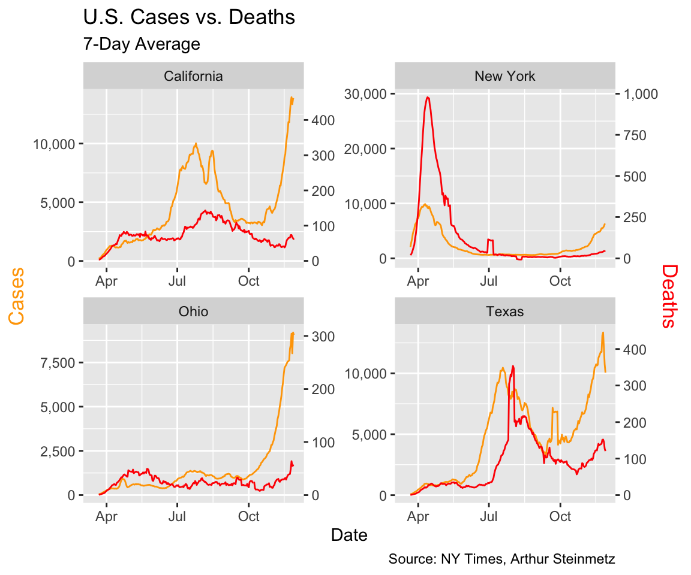
In particular we note New York, where the virus arrived early and circulated undetected for weeks. Testing was rare and we did not know much about the course of the disease so the death toll was much worse. Tests were often not conducted until the disease was in advanced stages so we would expect the lag to be shorter.
In Texas, the virus arrived later. There it looks like the consequences of the first wave were less dire and the lag was longer.
Now we can run the same workflow we used above over the state-by-state data. Our data set is much larger because we have a full set of lags for each state but building our data frame of list columns is just as easy.
Looking at the lags by state shows similar results to the national model, on average, as we assume, but the dispersion is large. Early in the pandemic, in New York, cases were diagnosed only for people who were already sick so the lead time before death was much shorter.
# create lags
us_states_lags <- us_states %>%
# create lags by day
tk_augment_lags(deaths_7day, .lags = -max_lead:0, .names = "auto")
# fix names to remove minus sign
names(us_states_lags) <- names(us_states_lags) %>% str_replace_all("lag-", "lead")
# make long form to nest
# initialize models data frame
models_st <- us_states_lags %>%
ungroup() %>%
pivot_longer(
cols = contains("lead"),
names_to = "lead",
values_to = "led_deaths"
) %>%
select(state, date, cases_7day, lead, led_deaths) %>%
mutate(lead = as.numeric(str_remove(lead, "deaths_7day_lead")))
# make separate tibbles for each regression
models_st <- models_st %>%
nest(data = c(date, cases_7day, led_deaths)) %>%
arrange(lead)
# Run a linear regression on lagged cases and date vs deaths
models_st <- models_st %>%
mutate(model = map(
data,
function(df) {
lm(led_deaths ~ cases_7day + poly(date, 2), data = df)
}
))
# Add regression coefficient
# get adjusted r squared
models_st <- models_st %>%
mutate(adj_r = map(model, function(x) {
glance(x) %>%
pull(adj.r.squared)
})
%>% unlist())
g <- models_st %>%
filter(state %in% state_subset) %>%
ggplot(aes(lead, adj_r)) +
geom_line() +
facet_wrap(~state) +
labs(
title = "Best Fit Lead Time",
caption = "Source: NY Times, Arthur Steinmetz"
)
show(g)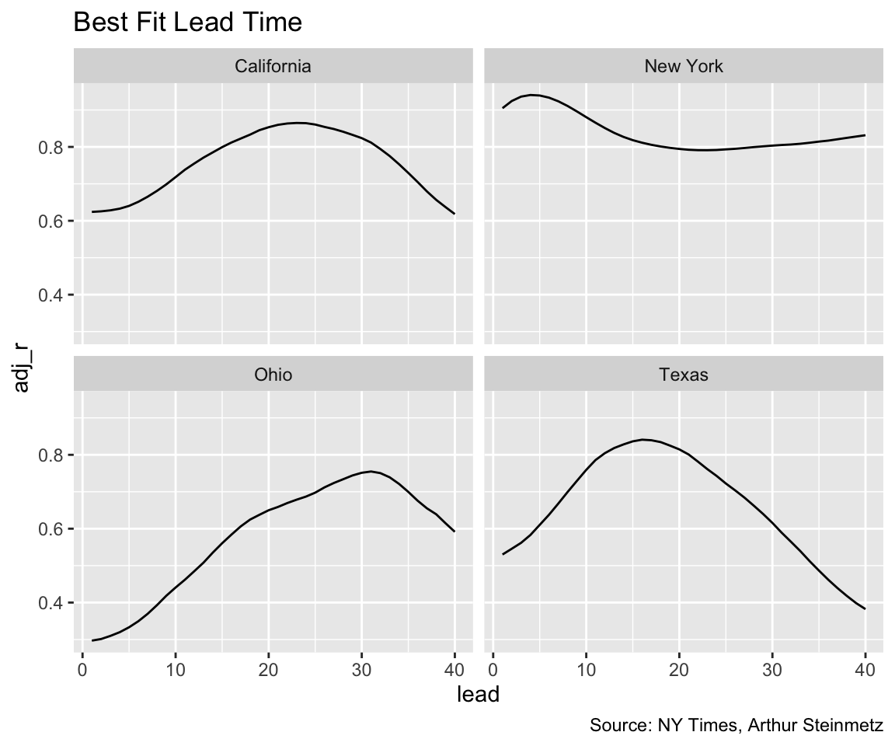
To see how the fit looks for the data set as a whole we look at a histogram of all the state R-squareds. We see many of the state models have a worse accuracy than the national model.
# best fit lag by state
best_fit_st <- models_st %>%
group_by(state) %>%
summarize(adj_r = max(adj_r)) %>%
left_join(models_st)
g <- best_fit_st %>% ggplot(aes(adj_r)) +
geom_histogram(bins = 10, color = "white") +
geom_vline(xintercept = best_fit$adj_r[[1]], color = "red") +
annotate(geom = "text", x = 0.75, y = 18, label = "Adj-R in National Model") +
labs(
y = "State Count",
x = "Adjusted R-Squared",
title = "Goodness of Fit of State Models",
caption = "Source:NY Times,Arthur Steinmetz"
)
show(g)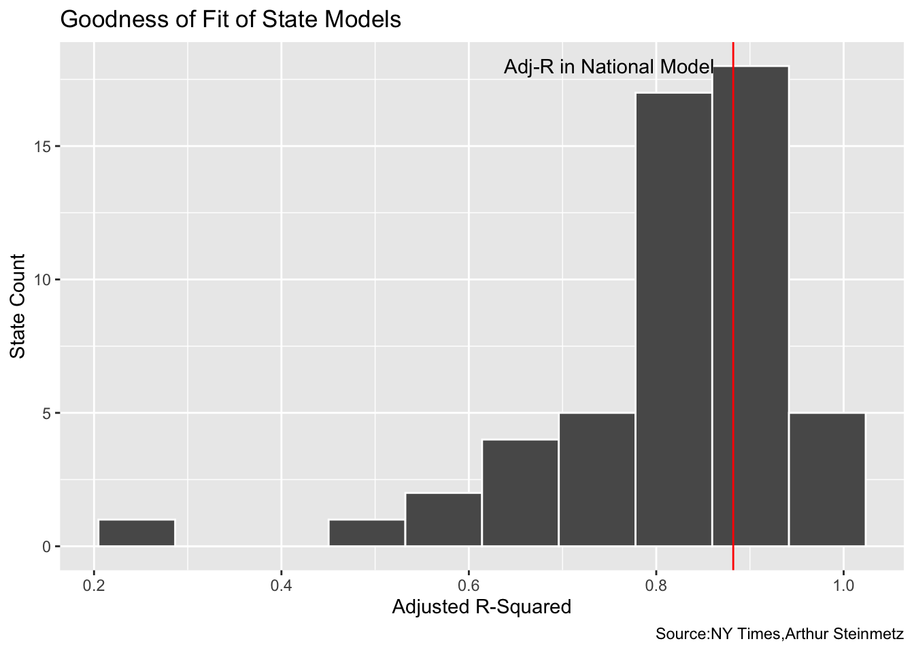
There are vast differences in the best-fit lead times across the states but the distribution is in agreement with our national model.
g <- best_fit_st %>% ggplot(aes(lead)) +
geom_histogram(binwidth = 5, color = "white") +
scale_y_continuous(labels = scales::label_number(accuracy = 1)) +
geom_vline(xintercept = best_fit$lead[[1]], color = "red") +
annotate(geom = "text", x = best_fit$lead[[1]] + 7, y = 10, label = "Lead in National Model") +
labs(
y = "State Count",
x = "Best Fit Model Days from Case to Death",
title = "COVID-19 Lag Time From Cases to Death",
caption = "Source:NY Times,Arthur Steinmetz"
)
show(g)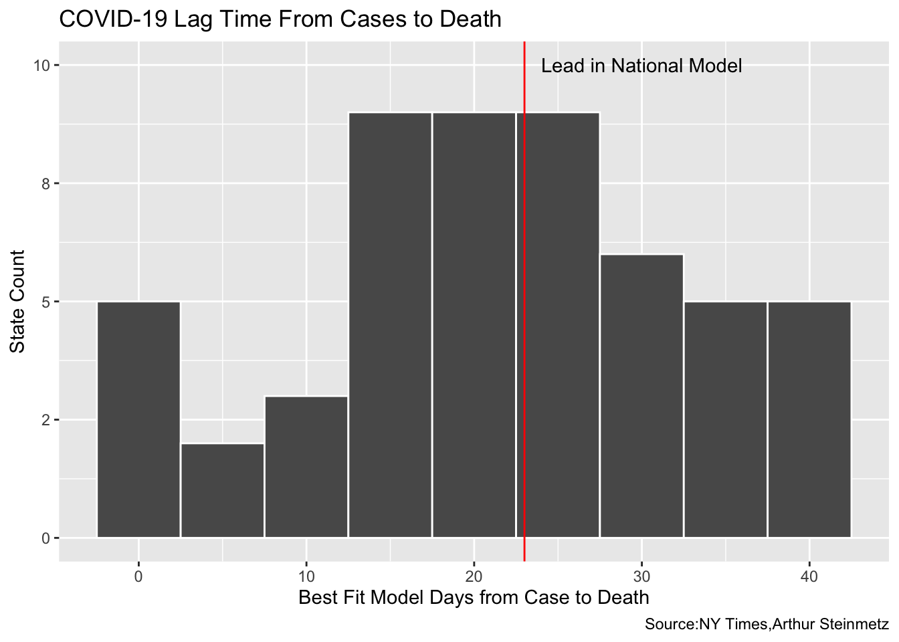
This whole exercise has involved proxying deaths by time and quantity of positive tests. Ideally, we should look at longitudinal data which follows each individual. The state of Ohio provides that so we’ll look at just this one state to provide a reality check on the foregoing analysis. In our proxy model, Ohio shows a best-fit lead time of 31 days, which is much longer than our national-level model.
# ----------------------------------------------------
best_fit_st %>%
select(-data, -model) %>%
filter(state == "Ohio") %>%
gt() %>%
tab_options(table.width = "50%") %>%
tab_style(style = table_style,
locations = cells_body()) %>%
opt_all_caps()| state | adj_r | lead |
|---|---|---|
| Ohio | 0.7548 | 31 |
The caveat here is the NY Times data uses the “case” date which is presumably the date a positive test is recorded. The Ohio data uses “onset” date, which is the date the “illness began.” That is not necessarily the same as the test date.
# source: https://coronavirus.ohio.gov/static/dashboards/COVIDSummaryData.csv
ohio_raw <- read_csv("https://coronavirus.ohio.gov/static/dashboards/COVIDSummaryData.csv",
col_types = cols(
`Admission Date` = col_date(format = "%m/%d/%Y"),
`Date Of Death` = col_date(format = "%m/%d/%Y"),
`Onset Date` = col_date(format = "%m/%d/%Y")
)
)
# helper function to fix column names to best practice
fix_df_colnames <- function(df) {
names(df) <- names(df) %>%
str_replace_all(c(" " = "_", "," = "")) %>%
tolower()
return(df)
}
# clean up the data
ohio <- ohio_raw %>%
rename(death_count = `Death Due to Illness Count`) %>%
filter(County != "Grand Total") %>%
fix_df_colnames() %>%
# data not clean before middle of march
filter(onset_date >= cutoff_start)How comparable are these data sets? Let’s compare the NY Times case count and dates to the Ohio “Illness Onset” dates.
# create rolling average function
mean_roll_7 <- slidify(mean, .period = 7, .align = "right")
comps <- ohio %>%
group_by(onset_date) %>%
summarise(OH = sum(case_count), .groups = "drop") %>%
mutate(OH = mean_roll_7(OH)) %>%
ungroup() %>%
mutate(state = "Ohio") %>%
rename(date = onset_date) %>%
left_join(us_states, by = c("date", "state")) %>%
transmute(date, OH, NYTimes = cases_7day)
g <- comps %>%
pivot_longer(c("OH", "NYTimes"), names_to = "source", values_to = "count") %>%
ggplot(aes(date, count, color = source)) +
geom_line() +
labs(
title = "Case Counts from Different Sources",
caption = "Source: State of Ohio, NY Times",
subtitle = "NY Times and State of Ohio",
x = "Date",
y = "Daily Case Count (7-day Rolling Average)"
)
show(g)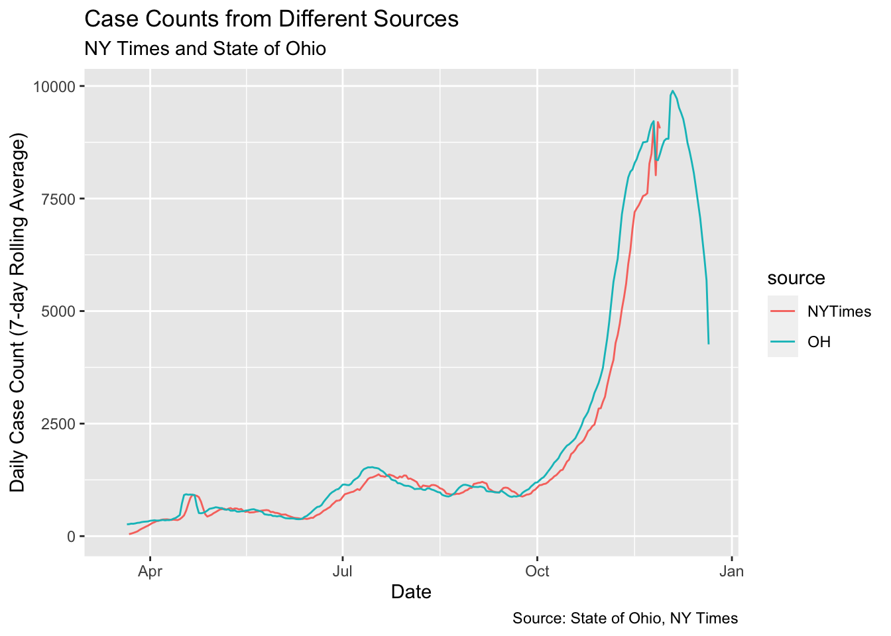
We clearly see the numbers line up almost exactly but the Ohio data runs about 4 days ahead of the NY Times data.
For each individual death, we subtract the onset date from the death date. Then we aggregate the county-level data to statewide and daily data to weekly. Then take the weekly mean of deaths.
# aggregate the data to weekly
ohio <- ohio %>%
mutate(
onset_to_death = as.numeric(date_of_death - onset_date),
onset_year = year(onset_date),
onset_week = epiweek(onset_date)
)
onset_to_death <- ohio %>%
filter(death_count > 0) %>%
group_by(onset_year, onset_week) %>%
summarise(
death_count_sum = sum(death_count),
mean_onset_to_death = weighted.mean(onset_to_death,
death_count,
na.rm = TRUE
)
) %>%
mutate(date = as.Date(paste(onset_year, onset_week, 1), "%Y %U %u"))
g <- onset_to_death %>% ggplot(aes(date, death_count_sum)) +
geom_col() +
labs(
title = "Ohio Weekly Deaths",
caption = "Source: State of Ohio, Arthur Steinmetz",
subtitle = "Based on Illness Onset Date",
x = "Date of Illness Onset",
y = "Deaths"
)
show(g)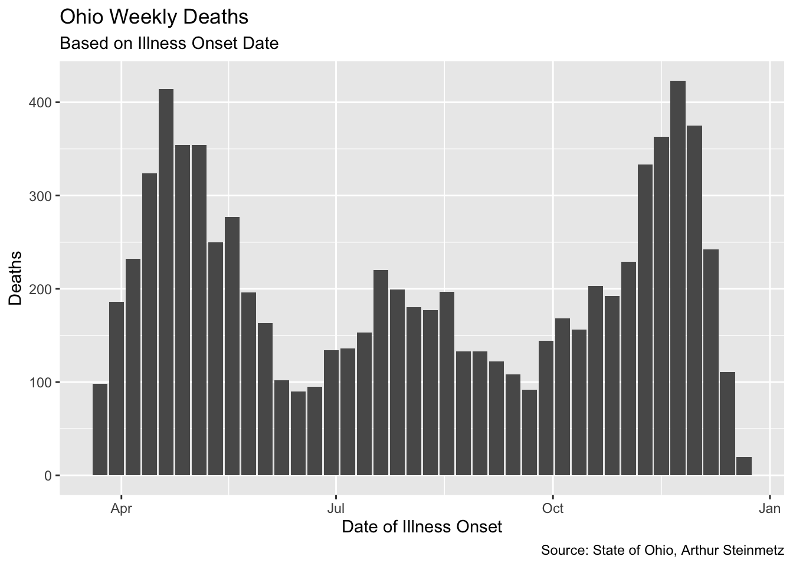
When we measure the average lag, we find that it has been fairly stable over time in Ohio. Unfortunately, it differs substantially from our proxy model using untracked cases.
# helper function to annotate plots
pos_index <- function(index_vec, fraction) {
return(index_vec[round(length(index_vec) * fraction)])
}
avg_lag <- round(mean(onset_to_death$mean_onset_to_death))
onset_to_death %>% ggplot(aes(date, mean_onset_to_death)) +
geom_col() +
geom_hline(yintercept = avg_lag) +
annotate(
geom = "text",
label = paste("Average Lag =", round(avg_lag)),
y = 20, x = pos_index(onset_to_death$date, .8)
) +
labs(
x = "Onset Date",
y = "Mean Onset to Death",
title = "Ohio Days from Illness Onset Until Death Over Time",
caption = "Source: State of Ohio, Arthur Steinmetz",
subtitle = paste(
"Average =",
avg_lag, "Days"
)
)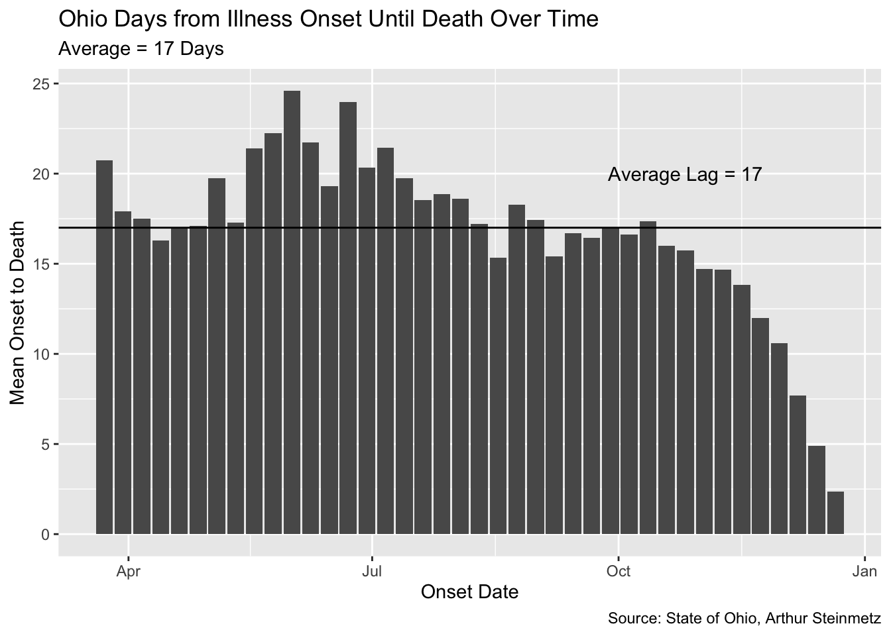
Note the drop off at the end of the date range. This is because we don’t yet know the outcome of the most recently recorded cases. Generally, while we have been successful in lowering the fatality rate of this disease, the duration from onset to death for those cases which are fatal has not changed much, at least in Ohio.
Since we have the actual number of deaths associated with every onset date we can calculate the “true” fatality rate. As mentioned, the fatality rate of the more recent cases is not yet known. Also the data is too sparse at the front of the series so we cut off the head and the tail of the data.
ohio_fatality_rate <- ohio %>%
group_by(onset_date) %>%
summarize(
case_count = sum(case_count),
death_count = sum(death_count), .groups = "drop"
) %>%
mutate(fatality_rate = death_count / case_count) %>%
mutate(fatality_rate_7day = mean_roll_7(fatality_rate)) %>%
# filter out most recent cases we we don't know outcome yet
filter(onset_date < max(onset_date) - 30)
ohio_fatality_rate %>%
filter(onset_date > as.Date("2020-04-15")) %>%
ggplot(aes(onset_date, fatality_rate_7day)) +
geom_line() +
geom_smooth() +
labs(
x = "Illness Onset Date", y = "Ohio Fatality Rate",
caption = "Source: State of Ohio, Arthur Steinmetz",
title = "Ohio Fatality Rate as a Percentage of Tracked Cases"
) +
scale_y_continuous(labels = scales::percent, breaks = seq(0, 0.12, by = .01))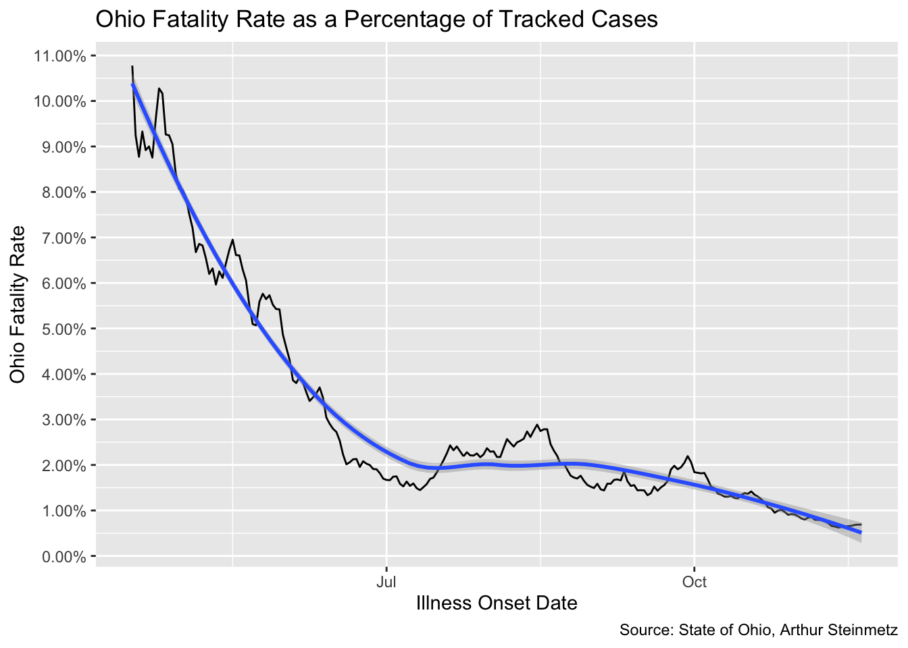
The fatality rate in Ohio seems to have been worse than our national model but it is coming down. Again, this result comes from a different methodology than our proxy model.
Among the vexing aspects of this terrible pandemic is that we don’t know what the gold standard is for treatment and prevention. We are learning as we go. The good news is we ARE learning. For a data analyst the challenge is the evolving relationship of of all of the disparate data. Here we have gotten some insight into the duration between a positive test and mortality. We can’t have high confidence that our proxy model using aggregate cases is strictly accurate because the longitudinal data from Ohio shows a different lag. We have clearly seen that mortality has been declining but our model suggests that death will nonetheless surge along with the autumn surge in cases.
What are the further avenues for modeling? There is a wealth of data around behavior and demographics with this disease that we don’t fully understand yet. On the analytics side, we might get more sophisticated with our modeling. We have only scratched the surface of the tidymodels framework and we might apply fancier predictive models than linear regression. Is the drop in the fatality rate we saw early in the pandemic real? Only people who were actually sick got tested in the early days. Now, many positive tests are from asymptomatic people. Finally, the disagreement between the case proxy model and the longitudinal data in Ohio shows there is more work to be done.
Art Steinmetz is the former Chairman, CEO and President of OppenheimerFunds. After joining the firm in 1986, Art was an analyst, portfolio manager and Chief Investment Officer. Art was named President in 2013, CEO in 2014, and, in 2015, Chairman of the firm with $250 billion under management. He stepped down when the firm was folded into Invesco.
Currently, Art is a private investor located in New York City. He is an avid amateur data scientist and is active in the R statistical programming language community.